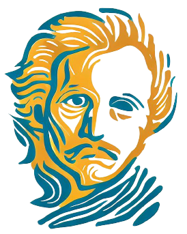
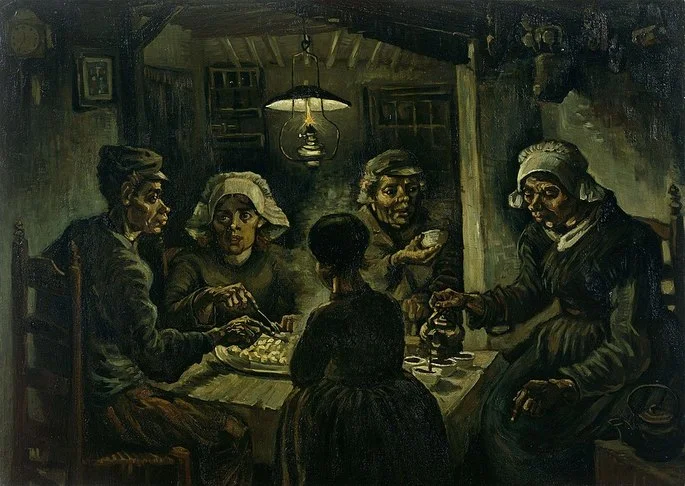
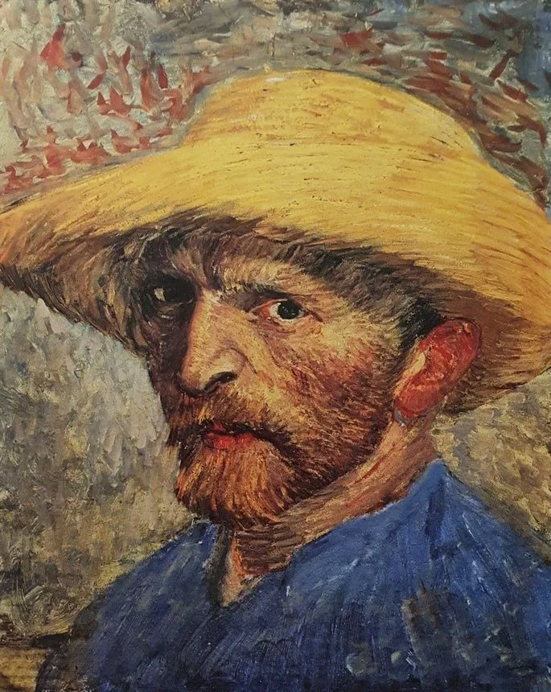
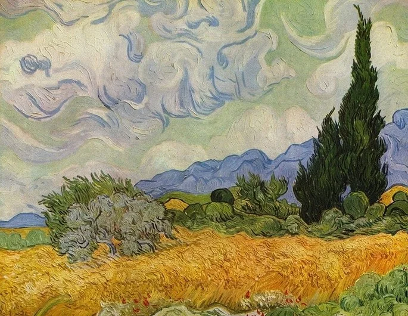
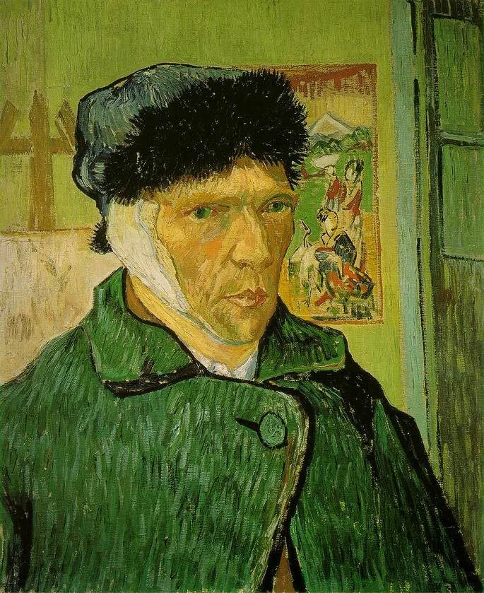
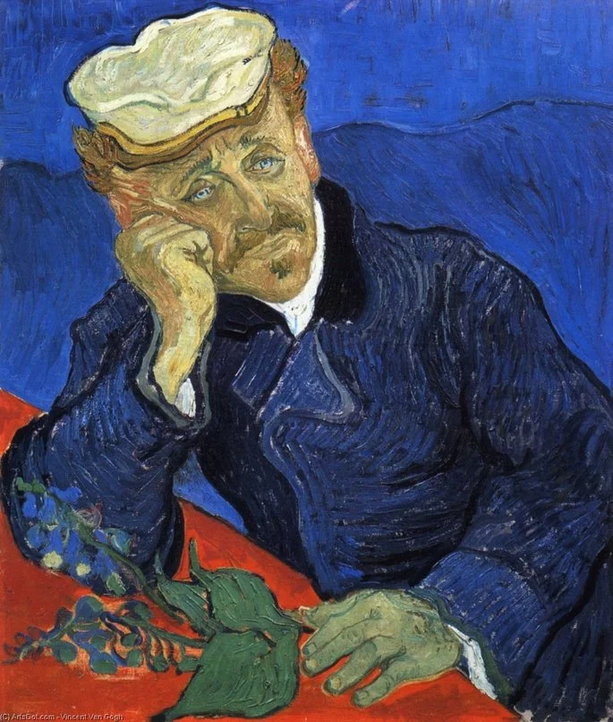
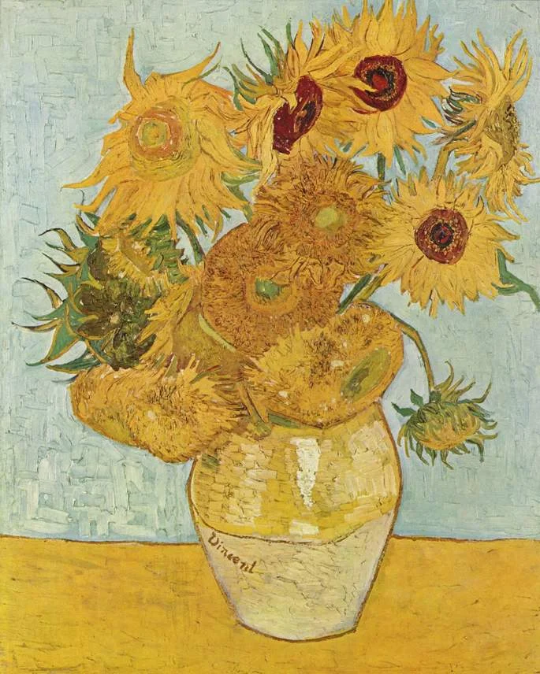

Van Gogh
Inicio
Galeria
Contato
Blog
GALERIA

Os comedores de batata
(1885)

Autorretrato com chapéu de palha
(1887)

Campo de trigo com ciprestes
(1889)

Autorretrato com a orelha cortada
(1889)

O Dr. Gachet
(1890)

Os girassóis
(1889)